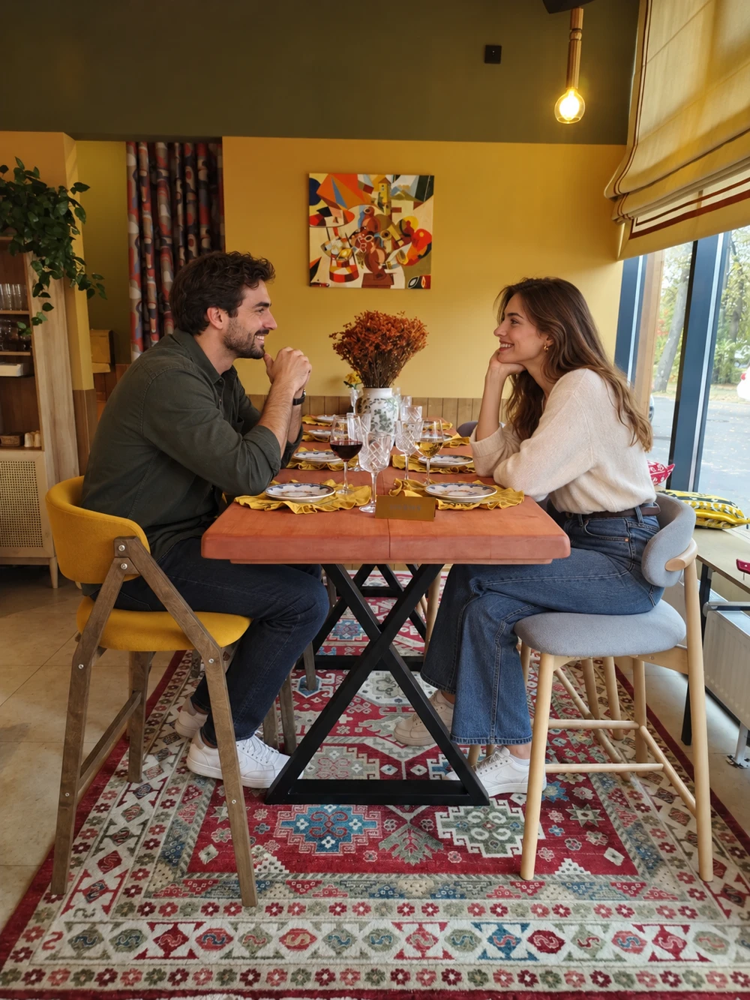

ДЕТАЛИ, КОТОРЫЕ ПРОБУЖДАЮТ АППЕТИТ
Вкус Грузии
За большим столом
всегда найдётся место.


Атмосферные фотографии кухни. Состав, порции и цены смотрите в меню.



ДОБРО ПОЖАЛОВАТЬ В «НИНО»
Большой стол.
Близкие люди.
Грузинская душа.
Заходите на обед, собирайтесь с друзьями или выбирайте любимые блюда с доставкой домой.
К ВАШЕМУ СТОЛУ
Доставка и оплата
Как удобно вам
Оплата картой, наличными и по QR-коду.
Уточнить адрес, время и детали заказа:
+7 (916) 609-26-03ОТВЕТЫ ДЛЯ ГОСТЕЙ
Частые вопросы
Можно заказать заранее к определённому времени?
Да. При оформлении выберите дату и желаемое время доставки. Время подтвердит администратор.
Можно убрать ингредиент из блюда?
Укажите пожелание в подробной карточке блюда, например “без кинзы” или “без лука”. Возможность изменения зависит от блюда. Если выполнить пожелание не получится, мы свяжемся с вами.
Как изменить или отменить заказ?
Позвоните в кафе и назовите номер заказа. Администратор уточнит, какие изменения ещё возможны.
Что делать, если заказ задерживается или привезли не всё?
Позвоните в кафе и назовите номер заказа — администратор поможет разобраться.
Нужно ли платить за приборы?
Нет, приборы бесплатные. По умолчанию заказ оформляется без приборов. Выберите нужное количество комплектов в корзине.
ДО ВСТРЕЧИ ЗА СТОЛОМ
Будем ждать вас
Адрес и время работы
п. г. т. Сабурово, 53Б
Ежедневно с 11:00 до 23:00
+7 (916) 609-26-03